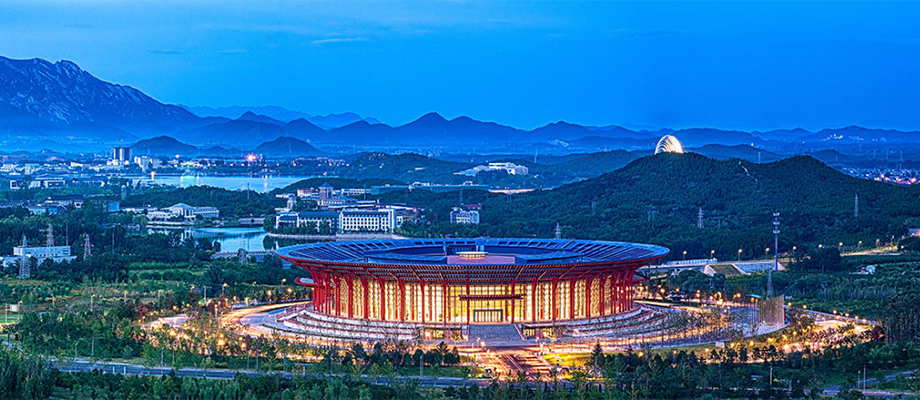

全面深化改革，是推动经济社会持续稳定发展的关键。
这其中，关键是坚持市场主导，在资源配置中起决定性作用。于社会而言，企业创新参与城市发展职能是承担责任，于企业而言，与政府协同协作推进城市转型升级将获得更多的发展机遇。
“十三五”规划纲要中明确提出推进特色小镇、小城镇建设，浙江是国内最早建设特色小镇的省份，浙江发展特色小镇已探索出扩大有效投资、提高发展质量的先行样本。不仅特色小镇的探索，作为近年连续排名城市吸引力、人口净流入全国领先的城市，杭州在推动产业升级、城市更新方面也涌现极具借鉴价值的政企协作样本。
1、产业主导，加速转型升级的一大引擎。
4月27日，“浙江大学中国新型城镇化研究院成立仪式暨新型城镇化高峰论坛”举行。作为论坛上参与分享的特色小镇典型样本之一，万科良渚文化村分享了其差异化的发展路径。

2、良渚文化村是中国最早的政企合作土地开发项目之一。
立足于五千年良渚文明、得天独厚的自然地理条件和后天的合理保护开发，作为临近主城区、服务于杭州总体升级的一部分，良渚文化村迅速成为一个宜居宜业的居住生活区，成为实现新型城镇化进程的良好案例。
2008年后，随着良渚博物院、良渚君澜度假酒店、玉鸟流苏创业产业园、良渚文化艺术中心等一大批项目建成，良渚开始从人居小镇向产业小镇的转变，培育发展了文创、教育、养老、旅游四大产业，成为可居、可游、可学、可创业的文化旅居小镇。据悉，截至目前良渚文化村对四大产业已累计投资 20 亿元，提供就业岗位超过3000个，年产值达2亿元，年客流接待量已超过200万人次。
国家在《关于开展特色小镇培育工作的通知》中明确提出“特色鲜明、产业发展、绿色生态、美丽宜居”的要求，万科良渚文化村17年的开发过程和成果，正是对产业和宜居共同发展的实践回应，也验证了政府指导下，以企业为主体，依靠市场力量开发的可行性。
3、近年大力发展的产城业务对此体现尤甚。
实际上，在把杭州建设成为“美丽中国的实践样本”的鸿途上，不仅仅是万科，也需要更多勇于创新的企业，与政府协同协作，培育杭州蓬勃生长的城市服务生态。